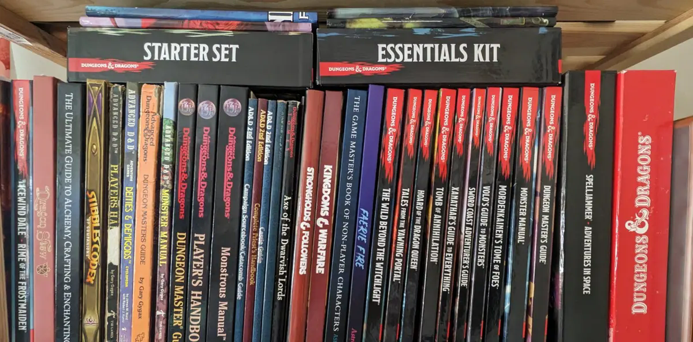

Games & Systems
Find the kind of game you want to play.
Every tabletop system creates a different experience. These short guides explain what players generally do, how the rules feel, and what makes each system distinctive.
Explore the possibilities
What to expect at the table
Current systems are connected to active GMS game pages. The larger catalog comes from 26 player survey responses and shows what the community would like to explore. Survey interest does not mean a table is already scheduled or that a Game Master is currently available.

2026 Player Survey
Most-requested systems
These are the six systems selected most often by 26 respondents. Participants could select more than one system, so totals will not add up to 26.
- Loading survey results...
Loading systems...
Available in current listings
Systems being played now
Open an adventure link to see its schedule, Game Master, price, experience level, and sign-up information.
From the player survey
Systems the community wants to explore
These requests help GMS-affiliated Game Masters understand what players may be interested in next. They are not announcements or guaranteed future games.
Ready to choose?
See what is currently running.
Recruiting games appear first. Each listing includes the Game Master, schedule, price, experience level, and a direct Discord link.